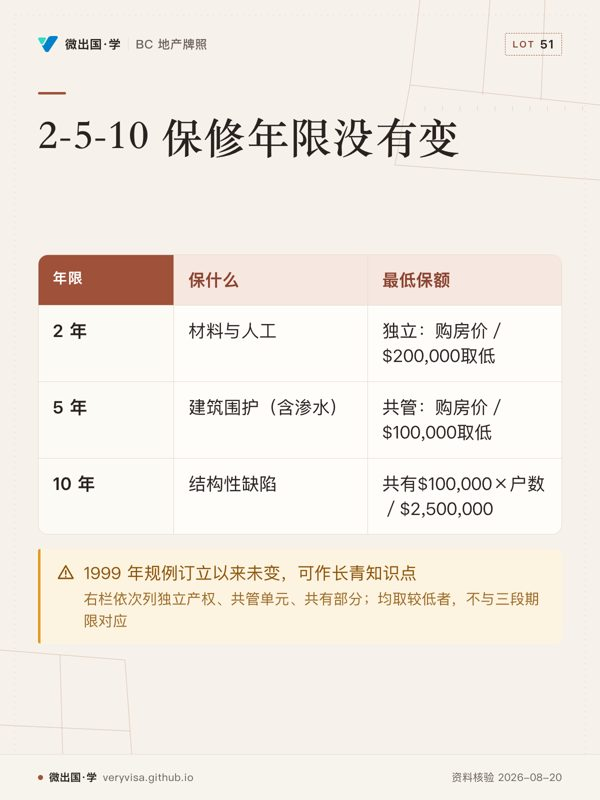

🃏 Flashcards · 3 闪卡 · 3 张 🖼 Slides · 2 幻灯 · 2 页 ✍️ Questions · 10 刷题 · 10 道
建筑·营销·技术 practice-misc P3 过一遍 P3 Skim
ZH EN ZH + EN
先看这一章怎么考 First, how this chapter is tested
年限对照题：问材料人工、建筑围护、结构缺陷各保几年。真正考的是 2、5、10 有没有对错位，而不是把「新房保修」当成一整段十年。 Duration-matching questions ask how many years cover materials and labour, the building envelope, and structural defects. What is really tested is whether 2, 5, and 10 are put in the wrong places, rather than treating new-home warranty as one unbroken ten-year block. 保额计算题：给购房价、户数或原购房总价，要你在「较低者」或「三者中最低」里取出最低保额。考的是独立产权、共管单元、共有部分三套公式不能混用，而且取低不取高。 Coverage-amount questions give a purchase price, a unit count, or the total original purchase price, and ask you to take the minimum warranty coverage from the lower amount or from the lowest of three. What is tested is that the three formulas, for fee simple, a strata unit, and common property, must not be mixed, and that the lower figure is taken rather than the higher one. 原理反直觉题：用沿海老公寓、面密封、打胶、没有空腔这类描述，考你还站不站在「密封越严越防水」上。配套会问窗台该看泛水还是只看胶。 Counter-intuitive principle questions use details such as an older coastal apartment, face sealing, caulking, and no cavity, to test whether you still hold that a tighter seal is more waterproof. A paired question asks whether the sill is read by the flashing or only by the caulking. 最常丢分的陷阱（看到题干信号就警觉） Traps that cost the most marks (watch for the signal in the stem)
年限对调 Years swapped 题干问哪一项是五年、哪一项是十年，或只说「新房还有没有保修」却不说是哪一类。 The stem asks which item is five years and which is ten, or it only asks whether the new home still has a warranty without saying which kind. 保额取高 Taking the higher amount 出现购房价、户数、原购房总价、$200,000、$100,000、$2,500,000 里的两个以上，并且问的是 minimum。 Two or more of these appear: purchase price, unit count, total original purchase price, $200,000, $100,000, and $2,500,000, and the question asks for the minimum. 密封越严越防水 A tighter seal is more waterproof 沿海、低层共管、面密封、取消空气层、只靠打胶，或窗台只提到 caulking。 The stem mentions the coast, a low-rise strata, face sealing, removing the air space, relying only on caulking, or a sill that mentions only caulking. 本章考点页：导图、要点表、7 道带逐项解析的练习 →
核实日期：2026-09-05。 建筑规范侧回读的是 gov.bc.ca 现行「BC Building Code 2024」与「BC Energy and
Zero Carbon Step Codes」页面；保修与验房侧回读的是 BC Laws《Homeowner Protection Act》（current to
2026-09-01 ）及其规例 B.C. Reg 29/99（同日期），以及 Consumer Protection BC 现行的「Home
inspections」执业页与 BC Housing 现行的「Licensing & Consumer Services」栏目。
这一章考试口径原本的定位是「让持牌人看得懂一栋房子」——不是把你训练成验房师，而是让你在报盘、
定价、写主体条件（subject clause）、以及回答买家「这处物业有什么问题」时，知道该看哪里、
该问谁、该在合同里留哪一句话。这个定位 2026 年没有变。
变的是这栋房子必须符合哪一版规范 、谁在监管建筑质量与验房行业 ，以及考试口径完全没有的
那一整套能效制度 。考试口径定稿于 2020 年，引用的是 2018 版 BC Building Code；六年过去，
规范换了一整版，省里又在规范之外另建了一套独立的能效分级制度。这两件事考试口径一个字都没提，
但它们决定了一套新房今天能不能拿到建筑许可、值不值该问的价钱。
✕
这一章说错话的代价，是让客户在错的年代里做判断
你按考试口径的框架回答「这房子符不符合规范」，脑子里想的是 2018 版的门槛；
而 2024 年 3 月 8 日之后申请建筑许可的新房，要过的是完全不同的一套规范，
里面新增了无障碍设计、军团菌防护、氡气预留管路、制冷上限这几条考试口径里根本查不到的要求。
客户如果拿着旧口径去跟建筑检查员或验房师对话，会问错问题、也会漏掉真正该问的问题。
一、制度地位：这一章管的是估价与披露的证据链，不是装修常识 本节回答 This section answers 漏了强制保修会怎样处分 What discipline follows a missed mandatory warranty?
BC 没有一部单独叫「建筑法」的法律。管一栋房子建得对不对的，是三层叠在一起的制度：
建筑规范（BC Building Code） ——由省政府制定，规管新建、改建、修缮与拆除的技术门槛，
温哥华市除外（温哥华用自己的《Vancouver Building Bylaw》，见第四节）；消费者保护制度 ——《Homeowner Protection Act》（HPA，1998 年制定）管建商牌照与新房强制保修；
《Business Practices and Consumer Protection Act》配套的《Home Inspector Licensing Regulation》
管验房师牌照；持牌人自己的执业义务 ——《Real Estate Services Act》要求持牌人尽合理注意去发现应披露的事实，
与 ch11 讲的「重大潜在缺陷（material latent defect）」披露义务直接相连。
三层制度背后是同一个底层逻辑：建筑质量与验房质量都存在信息不对称 ——买家看不懂结构、
看不见围护层背后，卖家未必知道自己的房子哪里不合规，而代理人处在两者中间。
制度设计的方式不是让持牌人变成工程师，而是建立一批可以查证的登记与牌照 （建商登记、
新房保修登记、验房师牌照），让「谁在为这栋房子的质量背书」变成一句可以核实的事实，
而不是一句口头承诺。
违反这一层的法律后果是具体的：卖新房漏了保修披露，持牌人可能被追究专业misconduct（考试口径举的
案例里，一名代理人因未确认强制保修在位而被停牌 7 天并罚款 $1,250）；重建过的房子按「新房」
出售却没有保修，卖方与建商都可能承担个人责任；把不合规的独立套间当卖点做广告，则会同时踩到
虚假宣传与重大潜在缺陷披露两条线（这条接口在 ch11 讲）。
节末检索小测 · 先别往回翻，凭记忆作答 Quick recall check: answer from memory before scrolling back
In the case cited by the course, a licensee who failed to confirm that the mandatory new-home warranty was in place received which outcome?
课程引用的案例里，持牌人没有确认强制新房保修已经在位，结果是什么？
a A written caution, with no suspension and no fine. ✗ 课程给的不是口头或书面提醒了事。未确认强制保修（mandatory warranty）在位，案例结果是停牌加罚款，把处分说成没有实质后果就不成立。 The course does not treat this as a verbal or written reminder and nothing more. Failing to confirm that the mandatory warranty was in place produced, in the case, a suspension plus a fine. Calling the discipline an outcome with no real consequence does not hold.
b A seven-day suspension and a fine of $1,250. ✓ 课程案例写明：代理人因未确认强制保修在位，被停牌 7 天并罚款 $1,250。这一章要的是去核实建商登记、新房保修登记和验房师牌照，而不是自己当工程师；把没有许可的独立套间当卖点，还会同时碰到虚假宣传和重大潜在缺陷（material latent defect）。 The course case states that the licensee was suspended for 7 days and fined $1,250 for failing to confirm that the mandatory warranty was in place. This chapter asks you to verify builder registration, new-home warranty registration, and the home inspector's licence, and not to act as the engineer. Marketing an unpermitted self-contained suite as a selling point also raises false advertising and a material latent defect.
c A ten-year cancellation and a fine of $2,500,000. ✗ $2,500,000 是共管共有部分最低保额公式里的一个候选数，不是纪律罚款。十年也是结构保修年限，不是吊销牌照的期限。数字拿错抽屉，就会把保额当成处分。 $2,500,000 is one candidate figure in the minimum-coverage formula for strata common property, not a discipline fine. Ten years is the length of the structural warranty, not the length of a licence cancellation. Putting the numbers in the wrong place turns a coverage amount into a penalty.
d No professional consequence, because only the builder checks warranty. ✗ 核实保修在不在位，正是持牌人合理注意的一部分。课程用停牌和罚款说明：不能把这件事完全推给建商。 Checking whether the warranty is in place is part of the licensee's reasonable care. The course uses the suspension and the fine to show that the task cannot be left entirely to the builder.
看答案与每个选项的解析 Show the answer and why each option is right or wrong 答案 Answer ：b
二、结构骨架：这部分考试口径写对了，而且短期内不会变 本节回答 This section answers 这种外形属于哪个年代 Which era does this form belong to?
一栋房子从下往上看，分基础（foundation） ——承重、抗震、防潮的最底层；和上部结构
（superstructure） ——墙、楼板、屋顶。多户建筑常见四种上部结构：
判断一栋房子的年代，一条实用线索是外部风格 ：考试口径把住宅风格分成传统式样（维多利亚式、
乔治式、都铎式等，多为二十世纪早期）、建筑设计式样（包豪斯/现代主义、西海岸式、
「Vancouver Special」等）与牧场式（Ranch）。其中 Vancouver Special 是本地特有的判断线索——
一种 1970 年代因应当时分区规则而出现的两层楼窄地块住宅，正立面一层常见砖饰面、
贯通整个宽度的浅阳台，一楼常带独立套间；今天在大温还有大量存量，看到这个外形基本可以
判断建成年代与后续加装套间的可能性。结构分类（原木、A 字架、砖、石、混凝土砌块、柱梁板、
西式平台木框架）也是同一类线索，其中西式平台木框架 是 BC 最常见的施工法——先在基础上
铺一层楼面板当「平台」，再在平台上立墙，逐层重复。
节末检索小测 · 先别往回翻，凭记忆作答 Quick recall check: answer from memory before scrolling back
A two-storey house on a narrow lot has brick on the ground-floor front, a shallow balcony across the full width, and a suite on the main floor. How does the course read that form?
窄地上的两层住宅，正立面一层是砖饰面，浅阳台贯通整面宽，一楼还有套间。课程把这种外形当成什么？
a As a Vancouver Special, a 1970s narrow-lot type that signals era and a likely suite. ✓ Vancouver Special 是 1970 年代因应当时分区规则出现的两层窄地住宅：正立面一层常见砖饰面，浅阳台贯通整个宽度，一楼常带独立套间。看到这个外形，就可以估计建成年代，并想到套间可能是原有或后来加的。 A Vancouver Special is a two-storey narrow-lot house of the 1970s, built in response to the zoning rules of that time. The ground-floor front is often brick facing, a shallow balcony runs the full width, and the main floor often has a self-contained suite. That form lets you estimate the year built and consider that the suite may be original or added later.
b As a concrete high-rise frame, which carries a two-hour fire rating with no added treatment. ✗ 混凝土框架（concrete framing）是 BC 中高层公寓的主流，两小时防火等级通常不必额外处理。两层窄地住宅对不上这种上部结构（superstructure）。 Concrete framing is the usual method for mid-rise and high-rise apartments in BC, and a two-hour fire rating usually needs no extra treatment. A two-storey narrow-lot house does not match that superstructure.
c As today's usual masonry-and-timber method for new detached houses. ✗ 砌体加木结构（masonry and timber）多见于老建筑，现代因防火规范趋严而减少，不是新建独立屋的主流。正立面有砖饰面，也不能单凭这一点定成这种结构。 Masonry and timber is seen more often in older buildings. It is used less today because fire-code requirements have tightened, and it is not the usual method for a new detached house. Brick on the front elevation is not, by itself, enough to call the house that structure.
d As proof that platform framing dates the house to the 1970s and to no other era. ✗ 西式平台木框架（platform frame）是 BC 最常见的施工法：先在基础上铺楼面板当平台，再立墙、逐层重复。它不能把房子断到某一个十年。低层公寓和独立屋更常见的是木框架（wood stud frame），同样不能靠本题这个正立面来认定。 The Western platform frame is the most common construction method in BC: a floor deck is laid on the foundation as a platform, the walls are raised, and the sequence is repeated storey by storey. It cannot date a house to one decade. Low-rise apartments and detached houses more often use wood stud frame, and this front elevation cannot establish that either.
看答案与每个选项的解析 Show the answer and why each option is right or wrong 答案 Answer ：a
三、建筑围护系统与「漏水公寓危机」：考试口径这段历史长青，但要接得上现行规范 本节回答 This section answers 窗台渗水要看什么做法 Which detail is read when a sill shows water? 本章考题 3 Question 3
建筑围护系统（building envelope） ——外墙、窗、门与保温层——是这一章底层逻辑最集中的地方。
它的功能是把房子的结构与内部环境隔离在雨水、风、灰尘与温差之外，任何一层失效，
后果都不是立刻看得见，而是几年后才在墙内显形的腐烂与霉变。
底层逻辑 ：1980 年代末到 1990 年代中，BC（尤其大温）出现大规模建筑围护失效——
外墙密封被误认为能挡水，结果渗入的水分被封在墙内出不来，造成结构腐烂，
业内称为「漏水公寓危机（leaky condo crisis）」，多数受影响的是低层的多户共管产权物业，
损失估计达数十亿元。这场危机催生了下一节要讲的《Homeowner Protection Act》，
也直接改写了 BC 沿海地区的建筑围护设计逻辑：外墙不能只靠密封挡水，必须给渗入的水分
留一条排出与晾干的路径 ——这就是排水通风墙（rainscreen）的原理：在外覆材料背后留一道空气层，
让偶然渗入的水分能重力排出并靠空气流动风干，而不是被锁在墙体内部慢慢积累。
BC Building Code 长期要求沿海地区的外墙构造采用这套排水通风原理，这一点考试口径写对了，
也没有过时。
⚠️
「外墙密封得越好越防水」在 BC 沿海地区是一句反直觉的错话
漏水公寓危机的教训恰恰相反：面密封（face-sealing）在实践中做不到滴水不漏，
一旦密封层失效，被锁住的水分反而比留有排水通道的墙体更难风干。
判断一栋老公寓是否翻新过围护系统、翻新时是否补做了排水通风层，
是看老旧共管物业时比看装修更重要的一步。
窗户的安装细节是围护失效里最常见的单点——窗台是排水最脆弱的部位，光靠打胶密封挡不住水，
必须靠泛水板（flashing）把水引出墙外；这也是为什么验房报告里窗户周边渗水痕迹要格外当回事。
节末检索小测 · 先别往回翻，凭记忆作答 Quick recall check: answer from memory before scrolling back
An inspection report notes staining around a window sill on a coastal building. Which point does the course treat as the right reading?
验房报告写到一栋沿海建筑的窗台周围有渗水痕迹。按课程，应当怎么理解？
a Sill stains are paint wear, because a continuous bead of caulking is the drainage path. ✗ 窗台不能只靠打胶。把胶缝当成排水路径，还是密封越严越防水的思路，课程明确说胶封挡不住从窗台进去的水。 A sill cannot rely only on caulking. Treating the caulked joint as the drainage path is still the idea that a tighter seal is more waterproof. The course states plainly that caulking does not stop water that enters at the sill.
b The sill is a weak drainage point, and flashing must lead water out; caulking alone is not enough. ✓ 窗户安装是围护失效里最常见的单点。窗台要靠泛水板（flashing）把水引出墙外，不能只靠打胶，所以报告里窗周渗水痕迹要单独当回事。 Window installation is the most common single point of envelope failure. The sill must use flashing to lead water out of the wall, and caulking alone is not enough, so staining around the window in a report has to be taken on its own.
c Sill staining restarts the structural warranty for a fresh ten years. ✗ 渗水痕迹不能重启保修。结构保修是 10 年、从保修起算日算；窗台渗水说明的是围护节点，不是把保修时钟拨回去。 Staining cannot restart the warranty. The structural warranty is 10 years, counted from warranty commencement. Water at the sill describes an envelope detail. It does not set the warranty clock back.
d Window details are relevant only on steel-frame towers, not on wood-frame buildings. ✗ 漏水公寓危机（leaky condo crisis）多数影响的是低层多户木框架一类的共管物业。钢框架在 BC 低层反而少见。窗台这个弱点不限于高层钢结构。 The leaky condo crisis mostly affected low-rise multi-unit wood-frame strata. Steel frame is uncommon in low-rise buildings in BC. The weak point at the sill is not limited to high-rise steel structures.
看答案与每个选项的解析 Show the answer and why each option is right or wrong 答案 Answer ：b
四、考试口径 vs 2026 现行：BC Building Code 换了一整版 本节回答 This section answers 温哥华在卷面上怎么写 How is Vancouver written on the exam? 本章考题 5 Question 5
下表是这一章的核心错位。考试口径整章的规范引用停在了 2018 版 ，而 2026 年现行的是
已经生效两年多的 2024 版——不是修订，是整版更替。
图：建筑规范两版怎么分——建筑许可申请日期决定适用哪一版规范
🔧
这张表怎么用
卷面 ：正式考试按注册课程现行考纲及官方更新准备；规范怎么分章、建筑许可怎么申请与验收，这套骨架没有变。实务 ：一栋新房或大改建工程按哪一版规范审批，取决于建筑许可申请
日期 而不是完工日期或今天的日期——2024 年 3 月之前申请、2026 年才完工的房子，走的仍是旧版规范。
给客户看新房时，第一句该问的是「这个项目的建筑许可是哪天申请的」，不是「现在是哪一版规范」。
节末检索小测 · 先别往回翻，凭记忆作答 Quick recall check: answer from memory before scrolling back
According to the course manual, which statement about Vancouver is the exam answer?
按课程手册，关于温哥华的建筑规范，考试要选哪一句？
a Vancouver is outside the BC Building Code and uses a 2014 bylaw based on the 2012 code. ✓ 这是考试口径：温哥华不适用 BC Building Code，用自己的 Vancouver Building Bylaw，手册写的是 2014 年版、基于 2012 版 BC Building Code。现行结构事实没变，温哥华仍然自订 bylaw，但现行版次要以温哥华市网站为准，不能把 2014 这个版次号当成今天的版次。 This is the exam wording: Vancouver is outside the BC Building Code and uses its own Vancouver Building Bylaw. The manual states the 2014 edition, based on the 2012 BC Building Code. The current structural fact has not changed: Vancouver still writes its own bylaw. The current edition must be taken from the City of Vancouver website. The 2014 edition number cannot be treated as today's edition number.
b Vancouver adopted the BC Building Code 2024 on 2024-03-08 and repealed its city bylaw. ✗ 2024-03-08 是省规范 2024 版的生效日，适用于该日之后申请的建筑许可，不是温哥华改用省规范的日子。用今天的规范答卷，还会把无障碍与地震设计的过渡日 2025-03-10、在途项目延至 2027-03-08 写进温哥华这道题，课程手册没有这条。 2024-03-08 is the in-force date of the 2024 provincial code, and it applies to building permits applied for after that date. It is not the date Vancouver switched to the provincial code. Answering with today's code also writes into this Vancouver question the transition date of 2025-03-10 for accessible design and seismic design, and the extension of in-progress projects to 2027-03-08. The course manual does not contain that line.
c The manual tests legionella control, radon rough-in, and a 26-degree cooling cap for every Vancouver house. ✗ 无障碍设计、军团菌防护、氡气分楼板减压系统的预留管路，以及至少一个起居空间不超过摄氏 26 度，是 2024 版新增内容，考试口径为零。不能当成卷面上温哥华题目的答案。 Accessible design, legionella control, rough-in piping for a radon sub-slab depressurization system, and at least one living space not above 26 degrees Celsius are additions in the 2024 edition. The exam wording contains none of them. They cannot be the answer to the Vancouver question on the exam.
d The manual lets the buyer pick the code edition when subject conditions are removed. ✗ 适用哪一版规范，看的是建筑许可申请日，不是买家解除主体条件的那天，也不是完工日或今天的日期。课程把这套申请与验收的骨架写成没有变。 Which code edition applies depends on the building-permit application date, not on the day the buyer removes the subject conditions, and not on the completion date or today's date. The course writes this framework of application and acceptance as unchanged.
看答案与每个选项的解析 Show the answer and why each option is right or wrong 答案 Answer ：a
五、BC Energy Step Code 与 Zero Carbon Step Code：考试口径完全没有的能效双轨制 本节回答 This section answers 自愿绿色评级是哪几套 Which programs are the voluntary green ratings?
考试口径的「绿色住宅」一节只讲了 EnerGuide、Built Green Canada、LEED、R-2000 这几套自愿性
评级与认证体系——它们今天仍然存在、仍然是买卖房时能拿出来讲的加分项。考试口径完全没有讲到的，
是省里另建的一整套跟建筑许可挂钩的能效制度 ：
BC Energy Step Code ——为新建筑设定阶梯式的能效门槛，省定的终点目标是到 2032 年，
全省新建筑达到净零能耗就绪（net-zero energy ready） ；Zero Carbon Step Code ——同一套框架下管温室气体排放，省定终点目标是到 2030 年，
新建筑实现零碳 。
BC Energy Step Code 自 2017 年 4 月 起施行，Zero Carbon Step Code 是 2023 年 5 月 才推出的。
省里定全省最低要求 （例如 2025-03-10 起多数新建筑至少要达到 Zero Carbon Step Code 的 EL-1），
市镇可以用 bylaw 要求更高一级 ——所以某个市镇现在具体要求做到哪一级，要查该市镇的 bylaw，
本篇不给各市镇的具体等级。
ℹ️
Step Code 与 EnerGuide／LEED 是两套不同性质的东西，别混着背
EnerGuide、Built Green、LEED、R-2000 是自愿性 评级，买家可以用它们比较不同房子的
能效表现，但不做也不违规。BC Energy Step Code 与 Zero Carbon Step Code 是与建筑许可挂钩
的门槛——新建筑要拿到许可，必须证明达到该市镇要求的那一级。给客户介绍新房时，
「这个项目按哪一版建筑规范、哪一级 Step Code 拿到的许可」和「有没有额外去考 LEED 认证」
是两个独立的问题，都值得问，但答案不能互相替代。
节末检索小测 · 先别往回翻，凭记忆作答 Quick recall check: answer from memory before scrolling back
Which programs does the course manual present as voluntary green ratings a buyer may use to compare houses?
课程手册把哪些项目写成买家可以用来比较房屋的自愿性绿色评级？
a The BC Energy Step Code and the Zero Carbon Step Code. ✗ 这两套是与建筑许可挂钩的门槛，不是自愿评级。考试口径完全没有写它们。现行里，BC Energy Step Code 自 2017 年 4 月起施行、省定终点是 2032 年净零能耗就绪，Zero Carbon Step Code 于 2023 年 5 月推出、省定终点是 2030 年零碳；2025-03-10 起多数新建筑至少要到 EL-1，市镇还可以用 bylaw 要求更高。卷面不要选这一项。 These two are thresholds tied to the building permit, not voluntary ratings. The exam wording does not mention them at all. Under the current rules, the BC Energy Step Code has applied since April 2017, and the provincial end point is net-zero energy ready in 2032. The Zero Carbon Step Code was introduced in May 2023, and the provincial end point is zero carbon in 2030. From 2025-03-10, most new buildings must reach at least EL-1, and a municipality may use a bylaw to require a higher level. Do not choose this item on the exam.
b EnerGuide, Built Green Canada, LEED, and R-2000. ✓ 考试口径的绿色住宅只写这四套自愿评级：EnerGuide、Built Green Canada、LEED、R-2000。它们今天仍然存在，可以用来比较能效，不做也不违规。这是卷面答案；它们不能代替某个项目按哪一级 Step Code 拿许可。 The exam wording on green housing names only these four voluntary ratings: EnerGuide, Built Green Canada, LEED, and R-2000. They still exist today and can be used to compare energy performance. Not using them is not a breach. This is the exam answer. They cannot replace the Step Code level a project must meet to obtain a permit.
c A municipal step level that the manual treats as an offence to miss. ✗ 课程没有把某一级市政阶梯写成刑事或专业违法。市镇可以用 bylaw 把许可门槛定得更高，但各市镇的具体等级不在课程数字里，也不能把自愿认证说成不做就违法。 The course does not write any municipal step level as a criminal or professional offence. A municipality may use a bylaw to set a higher permit threshold, but the specific level in each municipality is not among the course figures. A voluntary certification cannot be described as unlawful to skip.
d A 200-amp service and copper wiring, named as the manual's green-rating system. ✗ 150 或 200 安培常见于有电采暖的房子，100 安培是现代规范的最低起点，铜线三线接地是现代配线。这些是电气年代线索，不是绿色评级体系。 A service of 150 or 200 amps is common in a house with electric heat. 100 amps is the minimum starting point in the modern code. Copper three-wire cable with a ground is modern wiring. These are electrical clues to the era, not a green-rating system.
看答案与每个选项的解析 Show the answer and why each option is right or wrong 答案 Answer ：b
六、Homeowner Protection Act 与 2-5-10 保修：考试口径这段数字反而没有过时 本节回答 This section answers 保修从最早的哪天起算 Which earliest day starts the warranty? 本章考题 1 Question 1 本章考题 2 Question 2 本章考题 4 Question 4
《Homeowner Protection Act》（HPA）1998 年制定，直接回应上一节的漏水公寓危机，
建立了三项制度：建商必须登记领牌 （由 BC Housing 的 Licensing and Consumer Services
分部负责，这个部门名称与职能 2026 年仍然现行）、新房必须在 New Homes Registry 登记 、
新房必须投保强制性保修 （除非符合豁免条件）。
新房保修的结构俗称「2-5-10」 ：材料与人工 2 年 、建筑围护（含渗水）5 年 、
结构性缺陷 10 年 。这套年限自 1999 年规例订立以来没有变过，2026 年仍然现行。
最低保额 也没有变：独立产权（fee simple）物业不得低于购房价与 $200,000 两者中较低者 ；
共管产权（strata）单元不得低于购房价与 $100,000 两者中较低者 ；共管物业的共有部分
（common property）合计保额不得低于「全部单元原购房总价」「每户 $100,000 乘以户数 」与
「$2,500,000 」三者中最低 的那个数（HPA Regulation s.12(1)）。考试口径当年写的这几个数字，
与现行规例对照没有一处需要改 ——这是这一章少见的「考试口径反而没过时」的地方。
业主自建（owner-builder）豁免 的框架也仍然现行：在该土地上持有登记权益并打算自首次入住起
至少保持一年、亲自安排或管理全部或几乎全部施工、并通过登记官建房基础知识考试的个人，可以申请
「业主自建授权」，换来免建商牌照与免强制保修的资格；建造期间及建成后 12 个月内 不得出售或
挂牌出售，除非登记官以「不批准会造成过度困难」为由另行许可（HPA s.20.1 与规例）；但换来的代价是
转售义务与个人风险全部转到业主自己身上 ——转售时必须提供「业主自建披露通知」告知买家
该房是否有保修，如果没有保修，出了结构或围护缺陷，业主本人（而不是保险公司）就是唯一
可追责的对象。
✕
「10 年以内的房子」和「新房」不是一回事
HPA 的强制保修从保修起算日 算起（规例 s.4–5：独立产权一般取实际入住、核发入住许可、完工可入住
三者中最早者，共管单元取实际入住与产权过户中较早者），结构保修 10 年，与房子转手过几次业主无关。
一栋 8 年前建成、已经转手两次的房子仍然在 HPA 定义的「新房」框架内——
第二手买家同样有权知道保修还剩几年、有没有理赔记录。反过来，大幅重建
（substantial reconstruction） 在 HPA 下也被当作新房 ：地基以上结构被拆除或更换
超过 75% ，或新做地基且新增结构构件（含地基本身）达到完工后建筑的 50% ，
满足其一即落入「新房」范畴。考试口径举的真实案例里，一栋只留下 1% 原结构的重建屋，
挂牌代理人因为没意识到它属于「新房」而未确认保修在位，被追究了专业责任。
判断口径不是「这房子看起来老不老」，而是「保修起算日是哪天」以及「有没有构成大幅重建」。
节末检索小测 · 先别往回翻，凭记忆作答 Quick recall check: answer from memory before scrolling back
A fee-simple house was ready to occupy on March 1, its occupancy permit was issued on April 1, and the owner moved in on May 1. When does the course say the mandatory warranty starts?
一套独立产权房屋 3 月 1 日完工可入住，4 月 1 日核发入住许可，5 月 1 日业主搬入。按课程，强制保修从哪天起算？
a On May 1, so the owner can use the latest date and lengthen the cover. ✗ 起算日不由业主挑最晚的一天来拉长保修。独立产权取的是最早的那天，本题若选 5 月 1 日，方向反了。 The owner does not pick the latest day as the commencement date in order to lengthen the warranty. Fee simple takes the earliest day. Choosing May 1 on this question reverses the direction.
b On March 1, the earliest of readiness for occupancy, the occupancy permit, and actual occupancy. ✓ 独立产权的保修起算日（warranty commencement）取实际入住、核发入住许可、完工可入住三者中最早者。本题最早是 3 月 1 日完工可入住。共管单元是另一套：取实际入住与产权过户中较早者，不要混用。 Warranty commencement for fee simple is the earliest of actual occupancy, issuance of the occupancy permit, and readiness for occupancy. The earliest date here is March 1, when the home was ready to occupy. A strata unit uses a different pair: the earlier of actual occupancy and transfer of title. Do not mix the two.
c On the second sale, because each new buyer restarts the ten-year period. ✗ 保修不因转手重算。一栋已经转过手的房子，只要还在起算日后的相应年限里，后来的买家仍然要知道还剩几年、有没有理赔记录。 The warranty is not recalculated when the home changes hands. On a home that has already been resold, as long as it is still inside the relevant period after commencement, a later buyer still needs to know how many years remain and whether there is a claims record.
d Ten years after the building-permit application, with occupancy ignored. ✗ 许可申请日用来判断适用哪一版建筑规范，不是保修起算日。十年是结构保修的长度，要加在起算日之后，不能代替起算日本身。 The permit application date is used to decide which edition of the building code applies. It is not the warranty commencement date. Ten years is the length of the structural warranty. It is added after commencement and cannot stand in for the commencement date itself.
看答案与每个选项的解析 Show the answer and why each option is right or wrong 答案 Answer ：b
七、验房师牌照：考试口径只写了一句「需要牌照」，现行是一整套准入体系 本节回答 This section answers 验房牌照卷面只写哪句 Which one sentence does the exam give on inspector licensing?
考试口径对验房行业的现行监管只写了一句：自 2009 年 3 月起，提供付费验房服务需要牌照，
由 Consumer Protection BC 负责。这句话 2026 年仍然成立，但考试口径完全没有写这道牌照
门槛具体有多高 ——而这道门槛正是持牌人替客户挑选验房师时该心里有数的东西：
教育 ：完成一个经认可的验房培训项目，至少 150 小时 ，覆盖屋顶、泛水、烟囱、
冷暖设备、水电与结构系统；考试 ：通过认可的验房能力考试（数个不同机构的考试均可）；受训 ：在一名经批准的培训师带领下完成 50 小时 实地验房，并留存记录；同行推荐 ：在一名经批准的评估员监督下完成一次验房后，取得该评估员出具的推荐信；保险 ：维持 专业责任险（E&O）至少 100 万元 、综合责任险至少 100 万元 ，
且保单须覆盖包括渗水在内的常见验房纠纷；无犯罪记录证明 、营业登记证明 、以及所在市镇核发的营业执照 。
这套制度的法律依据是《Business Practices and Consumer Protection Act》配套的
《Home Inspector Licensing Regulation》，2026 年仍然现行。
🔧
转介验房师，考试口径那几条职业操守原则仍然是标准答案
考试口径给的操守框架至今没有变：不要只推荐一名验房师，给客户至少三个 独立人选，
让客户自己面试与挑选；不要替买家垫付验房费 （会让验房师面对付钱人有微妙的立场压力）；
不要因验房师指出的缺陷而贬低其专业判断，也不要评论买家选的验房师；
若代理人因转介而收取验房师的介绍费，必须及时向客户披露 来源、金额与相关事实——
考试口径当年引用的是 RECBC 时代的 Rules 5-11，现行条号是《Real Estate Services Rules》
s.56(1)(b)(i) ，条文明确点名 home inspector。
节末检索小测 · 先别往回翻，凭记忆作答 Quick recall check: answer from memory before scrolling back
What does the course manual give as its statement on home inspector licensing?
课程手册关于验房师牌照，考试那一句是怎么写的？
a Since March 2009, a paid inspection needs a licence from Consumer Protection BC. ✓ 考试口径只有这一句：自 2009 年 3 月起，提供付费验房服务需要牌照，由 Consumer Protection BC 负责。现行准入要高得多，但卷面问的是课程写出来的那一句，不是后来的课时和保额清单。 The exam wording is only this sentence: since March 2009, providing a paid home inspection requires a licence, and Consumer Protection BC is responsible. Current entry requirements are much higher, but the exam asks for the sentence the course wrote, not the later list of class hours and coverage amounts.
b The tested line is 150 class hours, 50 field hours, and $1,000,000 on each of two policies. ✗ 经认可培训至少 150 小时、实地验房 50 小时、专业责任险与综合责任险各至少 100 万元（$1,000,000），是现行牌照门槛，考试口径没写这些数字。用今天的规范答卷就会选这一项。 At least 150 hours of approved training, 50 hours of field inspections, and at least $1,000,000 on each of a professional liability policy and a comprehensive liability policy are current licence thresholds. The exam wording does not state these figures. Answering with today's rules selects this item.
c Anyone may inspect for a fee, and BC Housing issues the inspector licence. ✗ 付费验房必须持牌。建商牌照、新房登记和保修归 BC Housing 的 Licensing and Consumer Services；验房师牌照不是这个部门发的，法律依据是《Home Inspector Licensing Regulation》。 A paid inspection must be done under a licence. Builder licensing, new-home registration, and warranty sit with the Licensing and Consumer Services branch of BC Housing. The home inspector licence is not issued by that branch. The legal basis is the Home Inspector Licensing Regulation.
d A builder's invoice replaces an inspector's licence on a resale inspection. ✗ 建商文件不能代替验房师牌照。两套牌照分属不同制度，转售看房时也不能用卖方收据取消持牌要求。 A builder's documents cannot replace a home inspector's licence. The two licences belong to different systems. On a resale viewing, a seller's receipt cannot remove the requirement to hold a licence.
看答案与每个选项的解析 Show the answer and why each option is right or wrong 答案 Answer ：a
八、常见缺陷与验房阅读：三分类框架长青，年代判断线索是硬知识 本节回答 This section answers 1960年代的线看什么 What wiring is read for the 1960s?
考试口径把住宅缺陷分成三类，这套分类今天照样能用来跟买家解释验房报告：
设计缺陷（design defects） ——布局本身的问题，比如主卧要穿过卫生间才能到、
走道过窄、采光不足；多见于多户建筑，因为设计复杂度更高；可见缺陷（visible defects） ——安装不当（窗框与洞口间留缝）、材料低劣（柜门滑轨松动）、
使用不当（用沥青防水卷材当阳台地面）、保养不到位（门廊因未定期刷漆而腐朽）；不可见缺陷（invisible defects） ——遗漏（缺少防潮层、绝缘不足）、安装缺陷
（防潮层不连续）、材料不当（用了不合规格的结构木材）、保养不到位（排水管堵塞导致木结构受潮
腐烂）。多数不可见缺陷正是建筑、电气、给排水规范想要防住的那一类 ，代理人肉眼看不到，
只能靠年代、翻新记录与验房报告去推断。
电气系统的年代线索特别有用 ，因为它同时是判断房龄与判断可保性的双重信号：
服务容量方面，60 安培以下 的老系统足以应付基本电器，但加不了电暖或电炉；
100 安培 是现代规范的最低起点，150／200 安培 在有电采暖的房子里更常见。
给排水的年代线索同理：1955 年之前 常见镀锌钢管（内壁腐蚀导致水质发黄、水压下降）
与铅质排水管（会随年代老化渗漏，一旦发现应建议更换）；1980 年 12 月起 ，
喷注式尿素甲醛泡沫绝缘材料（UFFI）在加拿大被禁止使用，这是判断房屋绝缘层年代的一条硬线索——
1980 年之前施工、且窗下或电箱周边有钻孔痕迹的房子，值得在验房时特别问一句。
节末检索小测 · 先别往回翻，凭记忆作答 Quick recall check: answer from memory before scrolling back
A house built in 1968 still has its original branch circuits. The switches and receptacles carry no special marking. Which course statement applies?
一栋 1968 年的房子仍用原来的分支回路，开关和插座上没有特殊标记。按课程应当怎么看？
a This is the usual era for aluminum wiring, which needs CO/ALR devices and an anti-oxidant treatment. ✓ 铝线（aluminum wiring）常见于 1960 至 1970 年代。氧化后接头容易过热，必须配有 CO/ALR 标记的开关插座并做防氧化处理，否则是火灾隐患。1968 年正落在这个年代里，普通无标记器件对不上这条要求。 Aluminum wiring is common in the 1960s and 1970s. After it oxidizes, connections overheat easily. Switches and receptacles must carry the CO/ALR marking and receive an anti-oxidant treatment, or there is a fire hazard. The year 1968 falls in that era, and ordinary unmarked devices do not meet this requirement.
b This era is knob-and-tube, which includes a ground and is the modern standard. ✗ 瓷夹瓷管（knob-and-tube）常见于 1950 年以前，没有接地线。原理上正确安装仍可算安全，但许多保险公司会拒保或加费。它不是 1968 年的典型配线，也不是带接地的现代标准。 Knob-and-tube is common before 1950 and has no ground conductor. Installed correctly, it can still be treated as safe in principle, but many insurers will decline the risk or charge more. It is not the typical wiring of 1968, and it is not the modern standard with a ground.
c Only copper three-wire cable was used in the 1960s, so insurers have nothing to ask. ✗ 铜线三线接地是现代标准，不是 1960 年代唯一的做法。这个十年更要想到铝线，而且保险公司对老配线的态度不能由代理人替客户下结论。 Copper three-wire cable with a ground is the modern standard, not the only method used in the 1960s. That decade should bring aluminum wiring to mind. The licensee cannot decide for the client how an insurer will treat old wiring.
d Aluminum wiring was banned in December 1980, so a 1968 house cannot have it. ✗ 1980 年 12 月起在加拿大被禁止的是喷注式尿素甲醛泡沫绝缘材料（UFFI），不是铝线。1980 年前施工、窗下或电箱周围有钻孔的房子，验房时才要额外问 UFFI。把两项禁令记成同一天，年代线索就错了。 What was prohibited in Canada from December 1980 is injected urea-formaldehyde foam insulation, UFFI, not aluminum wiring. A house built before 1980, with drill holes under the windows or around the electrical panel, is the case where an inspection should also ask about UFFI. Dating both bans to the same day breaks the era clue.
看答案与每个选项的解析 Show the answer and why each option is right or wrong 答案 Answer ：a
九、柜台上怎么做：看房与报盘前的建筑清单 本节回答 This section answers 1955年前要问排水管 Before 1955, ask about the drain pipes
先问建筑许可日期，不是先问建成年份 ——新房或大改建适用哪一版规范，看的是许可申请日。老公寓问围护翻新记录 ：有没有做过排水通风墙改造？改造时间、承建方、是否留有保修文件？十年内的房子问保修剩余年限 ：向 New Homes Registry 查询该地址，确认建商牌照状态、
保修承保公司与理赔记录；大幅重建过的房子按「新房」对待。业主自建的房子问披露通知 ：有没有拿到「业主自建披露通知」？没有保修的，
缺陷风险由谁承担要写清楚。电气与给排水按年代问一句 ：1960 年代前的房子问配线类型，1955 年前的房子问排水管材质。推荐验房师给三个人选 ，让客户自己面试挑选，不代付费用，收介绍费必须书面披露。新建筑追问 Step Code 等级 ：该项目按该市镇要求做到了哪一级能效，是否额外申请了
EnerGuide／LEED／Built Green 认证。书面记录 ：所有关于建筑状况的口头答复，留成书面记录并存档。
节末检索小测 · 先别往回翻，凭记忆作答 Quick recall check: answer from memory before scrolling back
A licensee is preparing questions for a house built before 1955. Which extra check does the course put on the construction list?
持牌人要为一栋 1955 年之前建成的房子准备问题。课程的建筑清单要额外问什么？
a Skip services, because a pre-1955 house can never be treated as a new home after a rebuild. ✗ 大幅重建可以让一栋老房子重新落入新房。清单也没有说 1955 年前就不用问设备。这栋房子恰恰要按年代问给排水。 Substantial reconstruction can bring an old house back within new homes. The list also does not say that services need not be asked about before 1955. This house is one where plumbing is asked by era.
b Ask only about exterior paint, because pipe material is outside the licensee's list. ✗ 清单写的是 1955 年前问排水管材质，不是只看外墙油漆。油漆剥落可以是可见的保养问题，代替不了管材这条年代问题。 The list says to ask about drain-pipe material for a house from before 1955, not to look only at exterior paint. Peeling paint can be a visible maintenance problem. It does not replace the era question about pipe material.
c Ask about the drain pipes, because lead drains and galvanized steel supply lines were common before 1955. ✓ 1955 年之前常见镀锌钢管和铅质排水管。镀锌管内壁腐蚀会让水质发黄、水压下降；铅排水管会随年代老化渗漏，一旦发现应建议更换。清单把这条跟 1960 年代前问配线类型分开放。 Before 1955, galvanized steel supply lines and lead drains were common. Corrosion inside galvanized pipe turns the water yellow and lowers the pressure. Lead drains leak as they age, and once they are found, replacement should be recommended. The list keeps this item separate from asking about the type of wiring before the 1960s.
d Require a Zero Carbon label before the house is allowed to be listed. ✗ Zero Carbon Step Code 管的是新建筑的许可门槛，课程清单没有把它写成老房子挂牌的前置条件。1955 年前这栋房子，清单点名的是排水管材质。 The Zero Carbon Step Code governs the permit threshold for new buildings. The course list does not write it as a condition that must be met before an older house can be listed. For this house from before 1955, the list names drain-pipe material.
看答案与每个选项的解析 Show the answer and why each option is right or wrong 答案 Answer ：c
十、三个情景 本节回答 This section answers 老房子电线谁来下结论 Who decides whether the wiring in an old house is safe?
情景一：一套 2015 年建成的公寓，客户问「这栋楼受不受最新建筑规范保护」。
正确回答不是「受」也不是「不受」，而是：这栋楼建造时申请的建筑许可早于 2024-03-08，
所以从始至终适用的是它申请当时现行的那一版规范（2015 年就已完工，连 2018 版都轮不到），
2024 版新增的无障碍、军团菌防护等条款对它没有追溯力。它的强制保修与规范版本是两件事——
2015 年入住的房子，HPA 的 10 年结构保修到 2025 年前后就已届满 ，代理人的动作是去
New Homes Registry 查保修起算日、理赔记录与有没有转给业主的保修文件，而不是向买家暗示「还有保修」。
情景二：一栋 1958 年建成的独立屋，客户问「电线安不安全，会不会影响保险」。
代理人不替客户下结论，而是给出可核实的问题清单：先问卖方这栋房子是否更新过电气系统、
更新到多少安培；如果没有更新记录，1958 年建成的房子大概率还有一部分是 knob-and-tube 或
铝线配线，这两种情况都可能影响保险公司的承保态度或加费。代理人的动作是建议买家在
主体条件期内联系电工做专项检查，并提前联系保险公司确认承保条件 ，不是自己判断安不安全。
情景三：一名业主自建的新房，卖方说「不需要保修，因为我自己住了两年」。
代理人需要核实两件事：这名卖方当初是否取得了「业主自建授权」，以及该授权下是否满足
「首次入住起至少保持一年」与「建成后 12 个月内不得出售（除非登记官特许）」的条件。如果条件成立且没有保修，卖方必须向买家提供业主自建披露
通知 ，明确告知没有保修覆盖；如果日后出现结构或围护缺陷，买家唯一能追究的对象是这名
业主本人，而不是任何保险公司。代理人的动作是确保这份披露通知进了合同 ，并建议买家
就此获取独立法律意见——判断这份房子是否值得在没有保修的情况下购买，不是代理人的职责范围。
节末检索小测 · 先别往回翻，凭记忆作答 Quick recall check: answer from memory before scrolling back
A buyer of a 1940s house with no record of an electrical upgrade asks whether the wiring is safe and insurable. What does the course say the licensee should do?
买家看一栋没有电气更新记录的 1940 年代房子，问电线安不安全、保险保不保。按课程，持牌人该做什么？
a Tell the buyer the wiring is safe and that insurers do not ask about it. ✗ 1940 年代落在 1950 年以前，要想到瓷夹瓷管（knob-and-tube）。原理上正确安装仍可算安全，但许多保险公司会拒保或加费。代理人不能替客户宣布既安全又与保险无关。 The 1940s fall before 1950, so knob-and-tube should come to mind. Installed correctly, it can still be treated as safe in principle, but many insurers will decline the risk or charge more. The licensee cannot tell the client that the wiring is both safe and irrelevant to insurance.
b Declare the house uninsurable and end the offer the same day. ✗ 没有更新记录只说明要去核实，不等于已经确定拒保。代理人不替客户下「不能投保」的结论，也不该当天就把要约做掉。 No record of an upgrade only means the point must be checked. It does not mean that coverage has already been refused. The licensee does not decide for the client that the house cannot be insured, and should not end the offer the same day.
c Suggest an electrician and the insurer during subjects, and do not decide safety. ✓ 课程情景里的动作是：先问有没有更新、更新到多少安培；没有记录就建议买家在主体条件（subject clause）期内找电工做专项检查，并自己向保险公司确认承保。安全与否不是持牌人判断的。 The action in the course scenario is to ask first whether there was an upgrade and to how many amps. If there is no record, suggest that the buyer have an electrician do a specific inspection during the subject-clause period, and that the buyer confirm coverage with the insurer. Whether the wiring is safe is not for the licensee to decide.
d State that the house already has a 200-amp service because electric heat is common. ✗ 没有更新记录就不能断言容量。60 安培以下只能应付基本电器，加不了电暖或电炉；100 安培是现代规范的最低起点；150 或 200 安培在有电采暖的房子里更常见。这是该问卖方的事实，不是代理人的推定。 Without a record of an upgrade, the capacity cannot be asserted. A service below 60 amps can handle only basic appliances and cannot add electric heat or an electric range. 100 amps is the minimum starting point in the modern code. A service of 150 or 200 amps is more common in a house with electric heat. These are facts to ask the seller, not inferences for the licensee.
看答案与每个选项的解析 Show the answer and why each option is right or wrong 答案 Answer ：c
术语双语对照
延伸阅读
论坛全文：BC买房2026建筑规则：先看许可年份，再查2-5-10保修和验房牌照
源表（本篇判据）
本篇不给的数字 ：
各市镇现行要求新建筑达到的 Step Code 具体等级 ——在省定最低要求之上由各市镇 bylaw 决定，
去该市镇的建筑部门或 bylaw 查。《Vancouver Building Bylaw》现行具体版次号 ——以温哥华市网站为准；本篇只讲「温哥华不适用
BC Building Code，自订 VBBL」这一结构性事实。建筑围护翻新的保险金额门槛 这类考试口径给出的具体金额——正文不引用，只保留「翻新记录与保修文件要问」。
本页知识卡 不看正文也能拿到这一节的核心内容：先看导读，再看图。点图放大，左右翻页。
放大 ⤢ 项目采用哪版，关键看报批时点。 先看 先把市界特例与全省规则分开，再检查采用依据。易漏 生效并不等于所有既有项目同步换版。下一步 去练习，用报批时点做一次适用判断。详情与分享 → 
放大 ⤢ 期限和保额是两套不同维度的规则。 先看 左侧记缺陷类别，右侧当作产权保额索引。易漏 自建授权可能免强制保险，但转售披露责任仍在。下一步 去练习，分清期限、产权形态和豁免。详情与分享 → 本站依据官方原文自撰 · 出处见正文链接